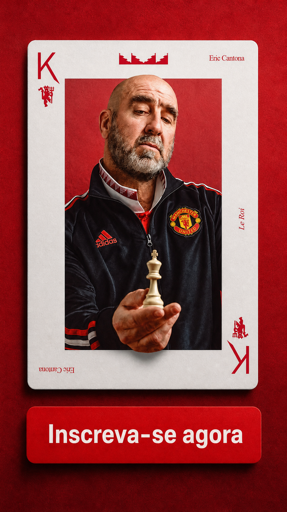
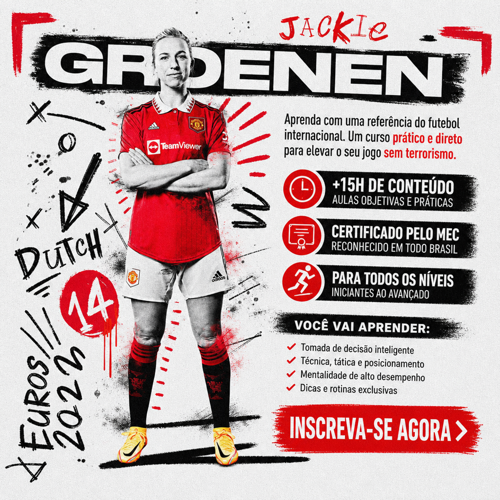

Image Harness Blind Gate
Compare Option A vs Option B for art direction and finish only. Record choices in .planning/validation/image-harness-blind-gate.json. Flag any objective-integrity regression (wrong brand, invented offer, format failure, style contamination).
pair-01 — art_variation / 1:1 / conservative
Option A Option B
pair-02 — art_variation / 4:5 / balanced
Option A Option B
pair-03 — art_variation / 9:16 / bold

Option A Option B
pair-04 — art_variation / 1:1 / extreme
Option A Option B
pair-05 — format_adaptation / 9:16 / conservative
Option A Option B
pair-06 — format_adaptation / 4:5 / balanced
Option A Option B
pair-07 — format_adaptation / 1:1 / bold
Option A Option B
pair-08 — format_adaptation / 9:16 / extreme
Option A Option B
pair-09 — restyling / 1:1 / conservative
Option A Option B
pair-10 — restyling / 4:5 / balanced
Option A 
Option B
pair-11 — restyling / 9:16 / bold
Option A Option B
pair-12 — restyling / 1:1 / extreme
Option A Option B